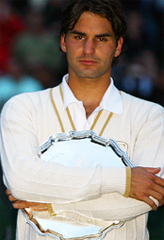

🏠 Home › Fundamentals › Strategy › Wimbledon 2008: A Different Story
Wimbledon 2008: A Different Story
Comprehensive unified tennis knowledge base — Fundamentals, Stroke Analysis, Reference Library, and more
Wimbledon 2008: A Different Story
John Yandell


What story did the numbers tell about the outcome of this match?
So after about 7 and a half hours, Roger and Rafa started the decisive fifth set in the 2008 Wimbledon final. At that point, the total number of points won by both players was exactly even: 151 points each.
They say that statistics tell the story, but which statistics and what story? No one knew at that point that the 5th set would go 9-7. Or that they would play over a hundred tense and sometimes brilliant points.
We know Rafa won, but how close was it really in that fifth set? In 16 games, Nadal won 58 points and Roger won 53. That's a 5-point difference. So, about every 3 games in that fifth set, Rafa won one more point than Roger. One more point every 3 games. That was the difference.
They say that "big points" determine matches. And it's hard to argue that because we have all seen dramatic turning points and how a tight match can shift on one shot. But what determines who wins the big points?
Unforced errors--yes, but what else determined this match?
In virtually every match I've ever charted from Grand Slam finals down to 4.0 club matches consider this. The player who won the most total points won the match. Yes, you can find turning points. But every individual point you win or lose counts in the physical, and especially, the emotional battle, in a closely contested match. In my opinion, it's usually the cumulative effect of all those individual points that leads to the key moments that turn matches.
The 2008 Wimbledon final may or may not have been the greatest pro match of all time--more on that later--but in that respect it wasn't any different than the hundreds of other matches I've charted. The player who won the most total points won the match. In the end Federer and Nadal played 413 points. Rafa won 209 and Roger won 204.
How Many Points Won How?
So, if Nadal won 209 points, and Federer won 204, the next question is how? Winners and unforced errors, right? Or is that wrong? If you try explaining the match in terms of the official statistics on the Wimbledon site or in the New York Times, you might come away thinking you got the winner wrong.
This is what the "official" stat line showed. Nadal hit 66 winners. Federer made 54 unforced errors. So, add those together that's 120 points for Nadal.
Federer hit 114 winners. Nadal made 30 unforced errors. So that's 144 points for Roger. So according to those numbers, Roger won 24 more points. If you were the only tennis fan on the planet who didn't know the outcome and someone showed you these numbers, who would you say won?
Roger's Points
Rafael's Points
Player's Own Winners
114
66
Opponent's Unforced Errors
30
54
Total
144
120
Do These Numbers Make Sense?
So, the so-called key statistics of winners and unforced errors don't square with the point totals. Nadal won 209 total points. 120 of them are reflected in the stat line. What about the other 89 points--almost a third of his total? How did he win those? Roger won 204 points, and only 144 are accounted for by official statistics. What about his other 60 points?
How could Roger hit 50 more winners and still lose the match?
The Unknown Statistic--Again
If you've read my previous articles on match statistics, you already know where I am going with all this. Right to the undisclosed gray area in official match numbers, what I've called the "Unknown Statistic." And that's the Forced Error.
Forced errors are what explain the discrepancies. A forced error is a shot hit by either player that creates enough pressure to draw a mistake from the opponent. This is different than an unforced error on a routine ball. (Click Here.)
Forced Errors, unfortunately, aren't in the Wimbledon stat sheets, or any tour stat sheets. But forced errors accounted for 149 points in the Wimbledon final. Think about it, 149 points that aren't really explained. That's almost 40% of the total points played in this match. And that isn't unusual. Forced errors play a similar role in all pro matches and matches at every other level. When you add in the forced errors, now you can see how Nadal won more total points.
Forced errors: one key to understanding Nadal's victory.
So, understanding them is critical in understanding why Nadal won Wimbledon in 2008. Not to mention understanding how and why you win or lose matches yourself. I've written about this extensively on the site, but if you don't already know about forced errors, this could be new and amazing information.
The problem is that to determine the actual forced errors, someone has to go back and rechart the whole 5 sets. And yes, that lucky person is me. And yes, it does take a lot longer than just watching the match the first time, pondering all those gray areas.
And one more thing, it can also lead to some discrepancies with the "official" statistics. Why? Because the difference between a forced error and an unforced error is often a matter of judgment. So, in charting this match, I had to decide these often subtle differences on dozens and dozens of points.
How would you score this point? I say a Forced Error.
You Decide
Take the amazing first point of the fifth set as an example and decide what you think. Federer hit a routine second serve to Nadal's backhand and Nadal hit a short return down the middle. Federer hit a short crosscourt forehand and Nadal jumped on it and unleashed a flat, high velocity, short angled crosscourt backhand. Amazingly, Federer caught up to the ball, and on the dead run hit a hard forehand deep down the middle to Nadal's backhand that looked like it clipped the line. Nadal may have gotten a weird bounce, barely got around on his swing, and hit a high, looping moonball to Federer's backhand.
They traded backhands down the line, and then Federer miss hit a second down the line backhand that landed inside the service box. Nadal covered it easily and hit a drop shot. Roger made it to the ball and, with the players standing less than 10 feet apart, tried to lift a touch lob over Nadal's head. Moving back, Nadal easily got his racket on the ball, but hit a backhand overhead a foot wide to Roger's left.
How do you score that one? Nadal could have put that ball somewhere in the court for sure but Federer was standing right there, so he tried to thread the needle behind Federer by going back down the line, and he missed. I say in the context of that point, that's a Forced Error.
Two returns. I called the first one unforced and the second forced.
What About These Returns?
Here are two other examples. In the second game of the fifth set, Federer made two forehand return errors on second serves in the ad court. In the first one, he tried to get around the ball but Rafa hit the serve well to his backhand side.
The ball was tougher than Federer expected, and it got on top of him just slightly and he missed. That one I called a Forced Error.
But on the second forehand return, Rafa hit a second serve that was closer to the middle of the box. Roger easily got around this one, but he over hit the ball a couple of feet long. That one I called an Unforced Error. Decide for yourself, but you get the idea about the gray area.
My overall numbers, because of these types of judgments, turned out a little different than the official stat sheet. For one thing I was harder on Roger on his unforced errors. But interestingly my Forced Error total was still pretty close to the unaccounted points in the official statistics. Remember there were 149 points unaccounted in the official stats. Presumably these were all Forced Errors. The number I came up with by actual count was 159 Forced Errors. So that's a few more than the official stats, but it makes sense that the number was in that ballpark. If anything it might show forced errors were even more important in this match than the holes in the official stats show.
Roger's Points
Rafael's Points
Player's Own Winners
91
58
Player's Forced Errors
81
78
Opponent's Unforced Errors
32
73
Total
204
209
When I charted the entire match with the forced errors, it looked like this.
So now the statistics finally make sense. Roger had almost as many forced errors as winners--obviously the forced errors he was able to generate were huge for him. But they were even bigger for Nadal. Nadal had significantly fewer winners than Federer, but almost exactly the same number of forced errors. And for the purposes of judging aggressive play (as we'll see below)--not to mention winning matches--a forced error is as good as a winner. Nadal hit only 58 winners, but his whopping 78 forced errors showed how many points he really won through aggressive play.
And yeah, then there's that other category with the most discrepancy between the players: the unforced errors. Roger made 73 unforced errors by my count, which was quite a few more than in the official stats. This was 32 more unforced errors than Nadal. Obviously, this was also critical and more on that toward the end.
OK but what did all these numbers mean in the context of this really long match with all these complex points and swings? Here is what I think the numbers actually showed about this titantic, heart wrenching match, set by set.
But first a brief and possibly equally critical psychological interlude.
Rafa controlled the tempo of the match beginning with the coin flip.
Psych Interlude
If you have read the previous articles I've written on the confrontations between these very different players, you know that Nadal has continually used subtle (or sometimes not so subtle) gamesmanship to try to intimidate Roger. You also know that I think that at times it appears to have worked, but at other times Roger seems to have successfully countered it with his own psychological strategies. (Click Here.) Part of this back and forth is stuff that happens before the matches start.
Guess what? This year at Wimbledon was no different. Did you see the coin flip? Although I had it on DVR, I didn't pay attention to it until my friend the Sports Illustrated writer Jon Wertheim pointed it out to me. He'd read what I had written about other Nadal pre-match tactics--and I have to thank him for pointing out something equally significant I missed the first time around.
When I looked at the coin flip again, I amazed to see what happened. With a very excited young kid out there to flip the coin, and with the umpire and Roger both already out there, Rafa made everyone wait. This kid was waiting for his moment in history and so were the umpire and defending champion.
And where was Rafa? Instead of going out there with everyone else, he sat down, had some water, then calmly ate part of an energy bar. Then he took the time to arrange his water bottles. Then he took off his warmup jacket and folded it very carefully. Finally, he joined them at the net. So Rafa made the kid, the umpire and Federer--and the 15,000 fans and the international TV audience--all wait for over a minute. That's pretty much an eternity--not to mention the price of that minute of network time he monopolized.
If you were Roger would have that pissed you off? You have to think yes. Did it affect anything that happened in the first two sets or the match in general? Who knows? But it's definitely part of the whole Nadal mystique. The guy was determined (that's too mild a word) to control the tempo of this match, starting from the coin flip, and he succeeded. Long term, I think his control of tempo had an impact.
Roger started out hitting some confident forehands.
1st Set
Ok, let me confess right from the start that I'm a huge Federer fan and I wanted him to have this record and so I was looking for signs of hope right from the start of the match. And there were some. Despite a huge Nadal forehand winner on the first point, Roger held easily in the first game and was already hitting some confident, dominating forehands of his own.
And then in Rafa's first service game. I was further encouraged when Roger came forward and hit a forehand volley into the open court off a dipping Nadal pass. Rafa held in that game, but serving at 1-1, Roger also hit another forehand volley winner. I thought that was a good trend.
But there was no early payoff--in fact the opposite--because at 30 all in the next game, Roger made a backhand unforced error, then missed another backhand on a near whiff on what was probably a bad bounce. Bang, Nadal had the first break.
Two missed backhands and the first break.
And despite some tough, beautiful backcourt points on both sides in the ensuing games, that was basically the end of the first set. Federer had a break point in the next game, but Rafa held for 3-1.
Then when Rafa was serving for the set at 5-4, Federer played an awesome game and got to break point twice. But Rafa fought him to a standstill both times.
Then Roger made two more backhand errors, Nadal held and that was the set, 6-4. And you had to wonder about those missed break points. All that effort on Roger's part but no payoff. Would he have been better off emotionally in the long run if Rafa had just held routinely? I thought back to that again when they got to the fifth set.
And the numbers? There was exactly one point difference in the set. Rafa won 34 points, Roger 33. Rafa had only 7 winners--but he created 11 forced errors. So that was key. The unknown statistic was critical as usual. But another more obvious number also stood out. Rafa also won 11 points on unforced errors from Federer's backhand. That wasn't a good omen for Roger fans.
A great passing shot and Roger had a break in the second.
Set 2
Federer held to start the second, then got up 30-0 on Nadal's serve and made it out to break point. He hit a great off balance crosscourt forehand passing shot winner to break. It felt like that could be the second set. In the next game, Federer started ripping forehands and serves and held for 3-0. The next three games stayed on serve, so now Roger was serving at 4-2.
At 15 all Roger hit a big forehand and came in and Rafa hit an amazing running forehand pass. He just nailed the ball at Roger's feet and forced a forehand volley error. But then Roger hit a great forehand of his own to get to 30 all.
Then on the next point Roger hit a short inside out forehand about two feet wide. Suddenly it was break point. Roger hit a second serve and then hit a short backhand approach. Rafa drilled a backhand down the line and Roger couldn't handle the high backhand volley. Suddenly it was back on serve at 3-4.
When Rafa broke back it seemed to deflate Federer.
Roger seemed deflated by that, but in a long next game on Nadal's serve, he still got to break point at 30-40. In retrospect, how huge would that have been to convert? But Nadal erased it with a first serve down the middle.
Then Federer had a great second chance for the break but missed a swinging forehand volley. That was brutal. A good Nadal first serve and it was 4-4.
Roger now looked very frustrated or maybe even angry. At 0-15 he hit a short backhand that Nadal pounded for a forehand winner. After another Nadal backhand winner it was 0-40. They played a tough backcourt point and Nadal hit forehand winner. Just like that Nadal had the break advantage instead and was serving for the set.
The Puzzle of the Slice
What a next game. Nadal had a set point. But Roger erased it with the hardest, lowest, slice crosscourt backhand I've ever seen him hit, drawing an error from Nadal, who tried to hit up on that ultra low ball with that extreme grip--but couldn't. It was gorgeous--and probably bounced no higher than a foot off the court.
The puzzle of the slice backhand: tremendous asset or inconsistent liability?
Then Roger had a break point but couldn't get it in an incredible scrambling point for both players. At one point it loked as if Roger had hit a forehand winner for sure--but no, it came back. Then another Federer backhand error, and suddenly, it was 2 sets for Nadal and looking very bleak for Federer fans.
The puzzle of the slice backhand! How may coaches and fans out there think Roger should hit a few hundred of those against Rafa every time? But in the end that one incredible shot didn't lead to results in the score, because Nadal served out the game to go up two sets to zero. The slice issue re-emerged later on though, as we'll see.
And again the numbers. In set 2 Rafa had 8 winners, but 16 forced errors. Fully 9 were on serves Federer couldn't handle, and 6 were forehands. Rafa won two more total points, 32 to 30 for Roger. And half those had come on the "unknown statistic."
You could really feel how close the first two sets were, and that Roger had been in them, and that definitely he could have or maybe even should have won the second. But now what? Was it going to be Nadal in three?
3rd Set
Anyone who doubts Federer's heart is going to have a very hard time explaining how this guy stormed back and took the next two sets.
The third set had a few potential turning points early on that didn't materialize. Federer had break points with Nadal serving at 2-3 but couldn't convert. Then at 3-3, Federer got down love 40 on his own serve. But Roger got out of it with some clutch serving and a missed forehand return from Rafa. They traded holds, but then the rain came with Rafa serving at 4-5.
Rafa came out after the break and immediately ran it to 40-0 in the first game after the delay, but Roger got back to deuce with a backhand return and a Rafa double fault. There was another deuce, so twice Roger was two points from winning the set. But Rafa held to get to 5 all. Then Roger held, finishing with an ace to get to 6-5. Then Rafa held at love to get to the tiebreaker, hitting a 126mph ace on the last point.
So, the breaker started. Serving at 1-2 on serve, Roger hits two big unreturnable serves. So, Nadal was now serving at 2-3 when Roger jumped on a second serve and hit a forehand return Rafa couldn't handle. Now for the first time you really thought Roger was going to win the third set.
An amazing inside out winner while moving the other way.
With Rafa serving at 2-4, Roger hit another amazing forehand winner moving to his left, but hitting the ball inside out the other way. At 5-2, Roger hit a forehand 1/2 inch out. But then he hit a great wide serve to get to 6-3. Rafa saved one point with a forehand volley, and another with a good wide serve. But serving at 6-5, Federer hit a clean ace to force a fourth set. This time Roger had 23 forced errors, 6 on his forehand and 11 on serve. That was virtually half of his total of 47 points.
4th Set
It's strange to say with so much on the line, but the fourth set was in many ways routine until they got to the breaker. The only real drama was when Roger got down 0-30 serving at 4-5. But a great serve, two big forehands and a rare Nadal unforced error got him out of it. And they stayed on serve all the way to 6 all.
The slice backhand reappeared with mixed results.
But there were some fascinating exchanges in this set that once again raised tactical questions about how Federer plays Nadal--or how he doesn't. And you couldn't help but wonder if Roger was flirting with the magic missing piece to improving his results.
The game Nadal served at 1-1 saw the mysterious reappearance--followed shortly thereafter by the disappearance--of Roger's backhand slice. On the first two points, seemingly out of nowhere, Roger decided to hit two slice backhands returns, and it worked on the second point as he drew Nadal in and passed him. Then in the next point, Roger hit three slice backhands in a row and got a Nadal forehand error.
He hit another slice return, a slice groundstroke, then tried a slice drop shot, followed it in, and got passed. He hit another slice return but this one sat up and Nadal hammered a forehand Roger couldn't handle. Then Roger missed a backhand slice return. It was like he had decided to conduct an experiment right there in the middle of the Wimbledon final.
In Rafa's next service game, he made another foray into slice land with an approach, but Nadal passed him easily. Then serving at 4-5 he hit a short angled crosscourt slice that was almost a drop shot, but Rafa got there easily and hit a drop shot of his own that Federer was not able to get back up over the net.
What did it all mean? Obviously, the results were mixed. The slice points that worked--as in the case of the one hard slice drive, he hit in the second set--looked really, really good. As in good enough to be the difference. The one's that didn't work looked almost equally bad. Could he perfect that tactic? Maybe. And maybe the final outcome of this historic match will make him think about it--or not.
More on all this below, because that discussion is getting ahead of the story, and the fourth set tiebreaker was about as tense as it can get in pro tennis.
With Nadal serving, they played an unbelievable first point that ended with Nadal hitting a backhand overhead and Federer rifling a forehand passing shot down the line. Then Rafa hit a short forehand winner to make it 1-1.
Roger missed an inside in forehand from deep in the court. Now Nadal had two service points with a 2-1 lead. He hit a rare ace, then a service winner to run it to 4-1. Federer came back with a gorgeous inside in forehand, 4-2. They played a long backcourt point that included one Nadal forehand that was probably out, but Nadal won the point when Roger couldn't handle a backhand down the line.
How many players can laugh off a double fault at 5-2 in the breaker?
So now Nadal had the match on his racket, as they say, serving at 5-2. And you're thinking how can Roger possibly get out of this? And maybe he needed help. And he got it. Nadal hit a double fault, only his third of the match. Then he missed what for him was a routine backhand. Nadal (and his dad) seemed to laugh off the double. But he did show just a hint of negative emotion after the backhand error.
So now Roger was suddenly back on serve at 4-5. He hit a gorgeous wide serve, backed up by a clean forehand crosscourt winner to make it 5-5. One more big first serve Nadal couldn't handle and suddenly it was 6-5 Roger.
On the next point they had a long, relatively cautious exchange and Roger hit a forehand well wide of the sideline. That made it 6 all. On the second Nadal service point, Federer made another forehand error, this time about 1 inch long over the baseline.
So match point Rafa, but on Roger's serve. Roger saved it with an unbelievably clutch first serve that Nadal barely touched. 7all. On the next point, Nadal hit an clean running forehand pass off a great, seemingly unreturnable Federer forehand approach. Nadal was so far away from the ball it seemed there was no way he could catch up with it, but not only did he somehow get there, he hit a dominating pass that Federer didn't touch. Match point number 2, and this time with Rafa serving.
The two best back to back passing shots ever in a Slam Final?
Now it was Roger's turn to come up with an almost equally stunning pass. Nadal hit a crosscourt forehand approach and Roger hit a perfect backhand down the line pass, making it look as casual as could be. Were those the two best clutch passing shots ever hit back-to-back in a Grand Slam final?
So now Rafa was serving at 8 all. But Federer worked his forehand inside out and set up a clean crosscourt forehand winner. And that was it. At 9-8, Rafa missed a second serve return. 2 sets all.
5th Set
So, as we said at the start, after all that tremendous tennis drama, the fifth set starts with the total number of points dead even at 151. No one could know at that point that it would go 9-7 or that over a third of the total points in the match had yet to be played.
Federer held to start, hitting a dominating backhand volley on game point. Rafa held with no drama. Federer missed a swinging volley to make it 30 all in his next service game, then hit a double fault at ad in to give Rafa a deuce point. Federer had another ad but Rafa forced a second deuce with a drop shot. But two Nadal errors kept it on serve, with Rafa now serving at 1-2. Nadal held losing only one point for 2 all.
Two aces after the rain delay? Amazing.
In the next game Federer was pushed to 30 all, hit an ace, but then lost the next point on a Nadal drop shot, with the rain falling and play suspended. So they went into the delay with Federer serving at 2 all, Deuce.
Unbelievably Roger came out and calmly hit 2 aces to hold. Rafa held no problem for 3 all. Then Roger held at love.
Then, with Nadal serving at 3-4, there was a moment where it looked like Roger was finally going to break through. At 30 all, he absolutely tagged a down the line forehand winner to get a break point to serve for the match. The look on his face just before Rafa served was that familiar, quiet confidence you see when he thinks he is in control or about to take control--something that had been absent for most the day.
Break point at 3-4 and unbelievable determination.
But if you looked across the net at Nadal's face you saw a look of superhuman determination to not let this happen. On Roger's return he hit an absolutely monstrous inside out forehand, and then crushed an overhead. You could see what that point took out of Roger. Roger made a forehand unforced error, and then Nadal held with a forehand inside in winner. Those three points must have felt like a knife in Roger's heart.
Again, they exchanged holds. Then at 5-5, it looked like the tipping point had again arrived, but this time for Rafa. Rafa hit a vicious dipping passing shot and a huge down the line forehand to get to double break point. But Roger answered with an ace and a great forehand to get back to deuce and he eventually held.
Still my feeling at this point was Roger's lost break opportunity and the near escape on serve had added to the cumulative strain of playing from behind the whole match. He had been fighting his way back into the match for hours, and even the best player in the world can only do that for so long.
Rafa held again. Then in the next game, there was a moment that didn't seem that important at the time, but may have decided the mental battle in Rafa's favor, even though Roger actually eventually held in the game to get to 7-6.
What if Roger had made this volley?
Roger quickly got down on his serve with a bad forehand unforced error on the first point, followed by a backhand error to make it 0-30. Once again, the serve rescued him as he hit an ace, then got a forced error, and hit a great forehand to get back on top 40-30.
On the next point, after a long, amazing exchange, Federer hit a relatively easy forehand volley into the tape with the court wide open. Anywhere over the net would have been an uncontested winner at the end of a tough point.
It was the kind of gift neither player had been giving and it must have been a big relief to Nadal. So instead of the game being over, it went on for another deuce with Roger eventually holding, but it turned into another gritty escape for Roger.
And as events showed, Roger's emotional reserves were now near exhaustion. I honestly believe if he had made that volley, he would have inflicted some pain on Nadal and at the same time, have saved some fight, maybe even enough to have that sixth title in hand today.
Part of the emotional tipping point in the first point of game 15?
At 6-7, Rafa held once again in a game that featured a couple of incredible, exhausting all court points--both won by Nadal. Then with Roger serving 7-7, Rafa hit a huge forehand winner and you saw Roger's head go down. Then Roger missed another forehand. At 15-30, Nadal blasted one of those flat backhand lasers crosscourt behind Federer to get to double break point at 15-40. Once again you saw Roger look down in discouragement.
Roger pulled himself together one more time though with another ace and a great forehand. Rafa got another ad on a crosscourt backhand, but Roger erased that to get back to deuce with a service winner.
But that was it. Two quick forehand errors from Roger and Nadal was serving for the match, with new balls. And now Nadal stepped it up that final notch. At 0-15 Nadal served and volleyed for the first time in 5 sets.
What kind of courage or confidence or insanity leads a player to do that? And he hit a forehand volley winner. Then he worked his way in on the next point and did it again. 2 forehand volley winners in a row to get to 30-15 at 8-7 in the fifth.
Rafa's first serve and volley--at 8-7 in the fifth.
Rafa hit a high backhand volley in the next point on a ball that looked like it was going out, missed and it was 30 all. But then Roger made a bad backhand error. Match point.
Now there was one more magical moment--one of the greatest clutch shots I have ever seen, period--Roger's gorgeous, fluid, backhand crosscourt return winner to get back to deuce. But you just could feel that he had been fighting for too long. Two good Nadal serves and it was over. Rafael Nadal, Wimby champ 2008.
The Numbers
Again, in the 5th set the forced errors were the key. Nadal forced 19 errors, including 8 with his forehand, 6 with his backhand, plus 4 off his serve. That was almost equal to his 21 clean winners.
As I said, for the entire match my numbers were a little different than the official states. But for both players I had a total of 162 Forced Errors out of 413 total points. In fact, more points were decided in this way than on clean winners or unforced errors. And that's kind of the point.
What you see when you look at it is that, in the exchanges, Nadal was able to pressure Federer off the ground off both sides. He didn't hit the aces Roger did, but his serve had the same effect, forcing Roger into errors on his forehand and especially his backhand return. Yes, Roger hit more clean winners, but Nadal more than equalized that by giving Roger difficult balls he was able to touch or hit but not control.
A backhand that Roger loves to hit--maybe too much.
And then there is the issue of Roger's backhand. Is there something wrong with it? In my opinion it's one of the most technically pure stroke patterns in the history of the game. The problem isn't technical. The problem is that no matter how well Roger hits it, it doesn't hurt Nadal in most circumstances. Neither basic exchange pattern is to his advantage. Crosscourt is to Nadal's forehand. And down the line is to Nadal's improved, vicious backhand.
The fact is Roger has a gorgeous backhand, likes to hit it, is used to doing damage with it, but that doesn't work against Nadal. So he gets frustrated or discouraged, and then he makes errors, errors that seem random or unexpected.
In 5 sets he hit 30 unforced errors on his backhand. Nadal had 13 backhand errors. That's a 17 point differential--more than 3 times the point margin in the whole match. Theoretically if Roger had just eliminated a handful of those errors, he would have won more total points, and maybe the match. So yeah, you could say he lost the Wimbledon record on that wing. But what should he or could he do different?
Roger likes to attack. He likes to crush people from the baseline. He'll play defense for sure, but he doesn't like to play defense to win points through attrition. He likes to play defense to transit back to offense. And when he hits solid backhand drive after backhand drive and can't make a dent in Rafael Nadal, well that's where the errors start.
And then there's the slice thing. He's proved that he can change it up and use the slice very effectively. But not consistently. And the question is whether he will adapt and try to do this over time--learn to hit the slice at the right time and put the ball in the right place where it causes Nadal real difficulties. Or is that even really possible? Is that just one more adaptation Nadal will make when and if it happens? And of course, no one can answer that question.
The Greatest?
So was it the greatest or one of the greatest matches ever played? There are several ways to address that question. Compared to the final in 2007 the match was off the charts statistically.
Those of you who've followed my analysis over the last few years know that there another statistic I compile that tells the story in matches. Once you have the Forced Errors, you can compute the big picture.
Wimbledon 2008
Aggressive Margin By Set
1
2
3
4
5
Average
Roger Federer
+13
+13
+26
+20
+24
+19.8
Rafael Nadal
+14
+18
+23
+22
+29
+21.2
Was it the greatest--and what does that mean?
This is the "Aggressive Margin." You add up a player's winners and forced errors, and then subtract his unforced errors. That gives you a hard measure of how aggressive each player was, and how successful. (Click Here.)
Last year at Wimbledon in the final, Roger averaged an Aggressive Margin of +10.8 per set. Nadal averaged +8.6. This year both players' numbers were more than double. Roger had an average Aggressive Margin for the match of +19.8. But Nadal was a whopping +21.2. That's up there with the highest numbers in any pro match I've ever charted. Compare it with the Sampras / Agassi confrontation at the U.S. Open in 2001 which was the highest quality statistical match I've studied.
And in terms of drama, it was up there as well. If Roger had actually won that 5th set I would have said it was the greatest match I'd ever seen--for the simple fact that he had to come from so far down.
But because Nadal was so far ahead so early, the whole match had an anti-climatic feel. Realistically, we were all just waiting for the inevitable to occur and admiring Roger's incredibly valiant struggle against the Nadal victory.
If Roger had won the second set of course, the whole dynamic might have changed. As it was, aren't we all lucky to have just witnessed it, and all the other confrontations between them in the last few years? I said it last year and I'll say it again. How fantastic if the next rematch was in the U.S. Open final.

John Yandell is widely acknowledged as one of the leading videographers and students of the modern game of professional tennis. His high speed filming for Advanced Tennis and Tennisplayer have provided new visual resources that have changed the way the game is studied and understood by both players and coaches. He has done personal video analysis for hundreds of high level competitive players, including Justine Henin-Hardenne, Taylor Dent and John McEnroe, among others.
In addition to his role as Editor of Tennisplayer he is the author of the critically acclaimed book Visual Tennis. The John Yandell Tennis School is located in San Francisco, California.
Source: tennisplayer.net archive — Wimbledon 2008 A Different Story.docx (John Yandell teaching library, 2002-2022). Extracted and rendered as HTML for Tennis Future Lab.